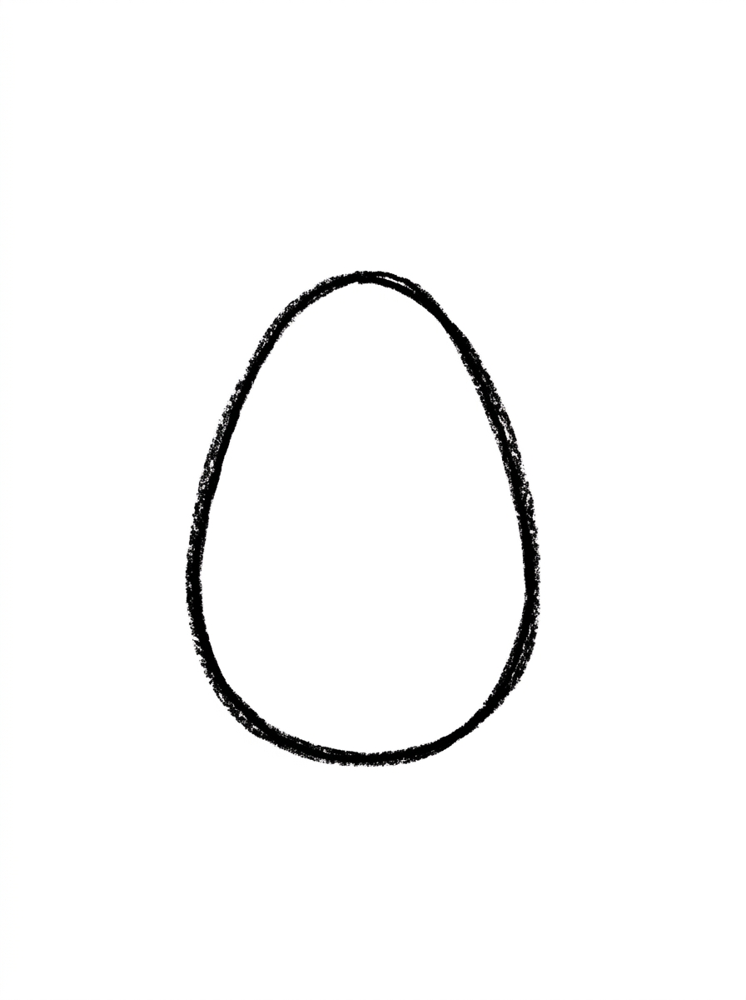
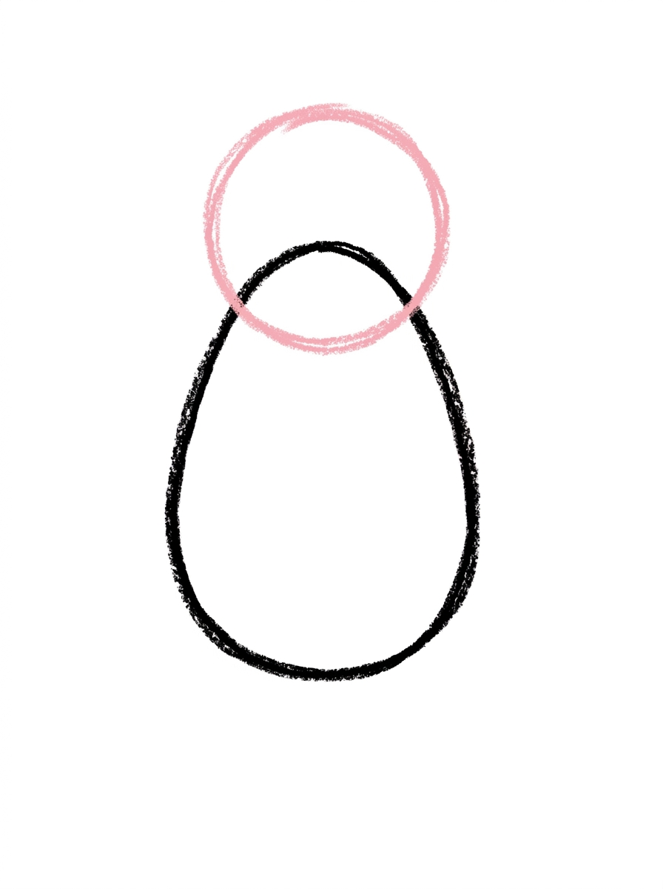
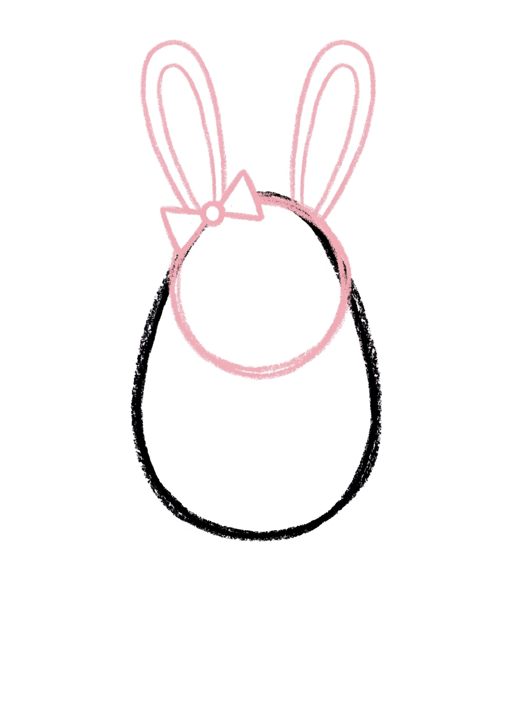
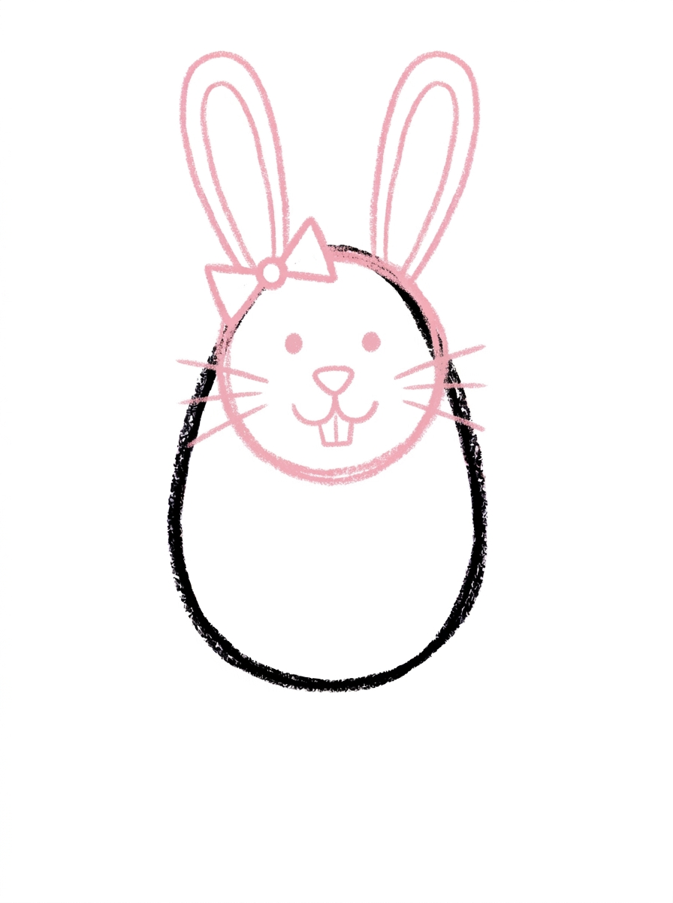
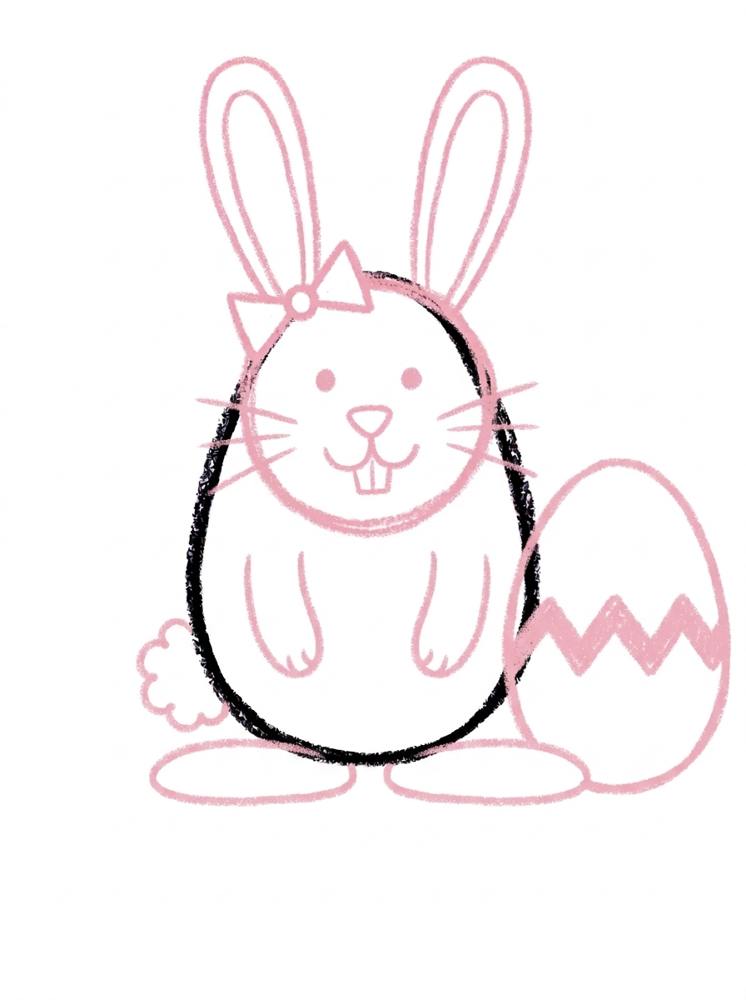
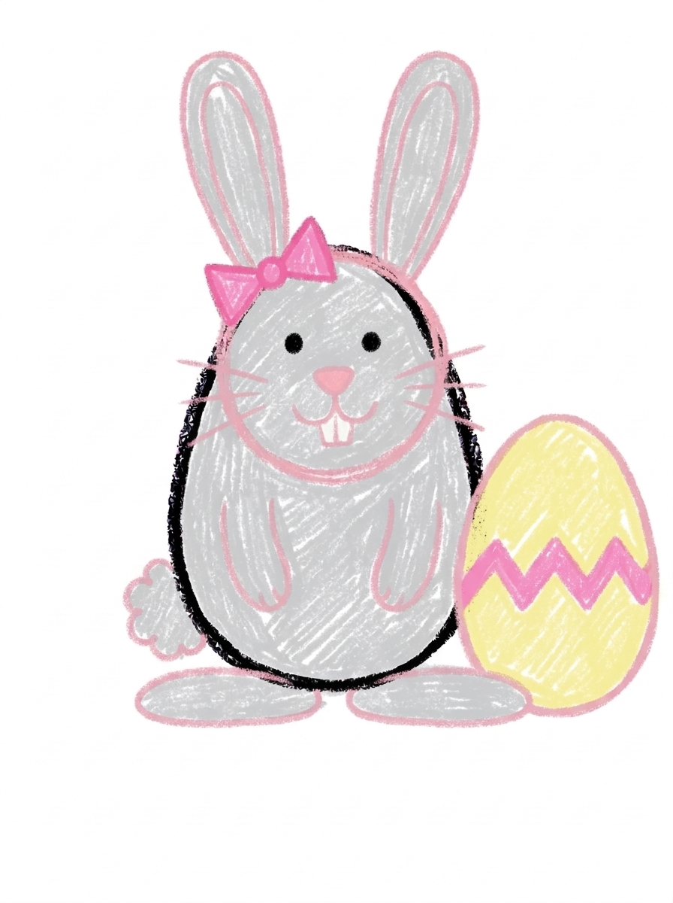

Easter Bunny Drawing for Kids How to Draw An Easter Bunny in 6 Easy Steps
Quick Answer
Draw an Easter bunny in six easy steps: an egg-shaped body, a round head, long ears with a bow, a sweet bunny face with front teeth, legs, a fluffy tail, and a decorated egg beside her. Color her soft gray with a pink bow. Made for ages 3 and up — print free.
At a Glance
- Subject: How to draw an easter bunny
- Ages: 3+
- Steps: 6 steps
- Time: ~15 min
- Difficulty: Easy
- Supplies: Paper, crayons
This Easter bunny is built from the most Easter shape there is — an egg. An egg-shaped body, a round head, and long ears turn into a bunny with a bow, two front teeth, and a decorated egg standing beside her, ready to color.
✏️ Draw Your Easter Bunny in 6 Easy Steps
One step per box — this step by step easter bunny drawing shows each new part in a different color so kids can see exactly what changed.
Step 1: The Body

Draw one upright egg shape, wider at the bottom — that's the bunny's body.
Step 2: The Head

Add a circle sitting on top of the body, overlapping its top edge — that's the head.
Step 3: The Ears and Bow

Draw two long rounded ears standing side by side on top of the head, and a small bow tied at the base of one ear.
Step 4: The Bunny Face

Draw two eye dots, a small nose, a line down from the nose that splits into two curves for the mouth, two front teeth hanging below the mouth, and whiskers on both sides.
Step 5: The Legs, Tail, and Easter Egg

Draw two front legs with paws on the front of the body, two big hind feet at the bottom, a round fluffy tail on the side, and one big Easter egg standing beside her with a zigzag band across it.
Step 6: Color It In

Color your bunny! Soft light gray for the bunny, a bright pink bow, a pink nose, white front teeth, and a pale yellow Easter egg with a pink zigzag band. Great drawing!
📊 Easter Bunny Drawing by Age
Every age can join in — just adjust the job.
| Age | What they can do | Tip |
|---|---|---|
| 3-4 | Draw the egg-shaped body and color the finished bunny soft gray. | An egg shape is just an oval with a wider bottom — practice it once on scrap paper and step 1 is theirs. |
| 4-5 | Add the head, the two long ears with the bow, and the big Easter egg beside her. | The egg stands on the same ground line as the bunny's feet — line the bottoms up so the egg isn't floating. |
| 6+ | Finish all six steps, including the split mouth with two front teeth, the whiskers, and the zigzag band on the egg. | Let older kids design their own egg band in their coloring — stripes, dots, or flowers — while the drawing band stays zigzag. |
🖨️ Download Your Free Easter Bunny Drawing Printable
The printable lays out all 6 steps one per box, big enough for little hands — kids draw right alongside each step.
⬇️ Open Free Printable 🖨️ Print🎁 Free printable for ages 3+
🐰 Easter Egg Hunt Page
Turn the page into an egg hunt: keep the bunny's egg beside her, then hide three more eggs around the page — one behind a tuft of grass, one under a flower, one peeking from behind the bunny herself. Decorate each hidden egg with a different band: zigzags, stripes, dots. Then write one sentence under the drawing about who finds them first (or dictate it for a grown-up to write).
What You'll Need to Draw An Easter Bunny
All you need is a pencil, an eraser, and crayons or markers. For the colors in the tutorial, have soft light gray ready for the bunny, bright pink for the bow, pink for the nose, white for the front teeth, and pale yellow for the Easter egg with its pink zigzag band. Regular printer paper or a sketchbook both work.
What They're Learning
This tutorial practices the egg shape (an oval weighted at the bottom), symmetry in the ears and whiskers, and a genuine drawing technique — building a mouth from a line that splits into two curves. Kids also place four legs correctly on a front-facing animal and draw a repeating zigzag pattern with even spacing.
Make It Yours
Try a white bunny or a brown one, a blue bow for a boy bunny, a whole basket of eggs beside her instead of one, or spring flowers and grass along the bottom of the page. The egg's band can be recolored in stripes or dots at coloring time even though the drawing keeps the zigzag.
🛒 Our Favorite Drawing Supplies
These are the supplies we reach for in our own home — washable (because kids), quality paper, and enough colors to avoid fights.
As an Amazon Associate, MomYouNeedThis earns from qualifying purchases — at no extra cost to you.
💡 Easter Bunny Drawing Tips for Parents
Step 4's face has an order worth following: eyes and nose first, then the line down from the nose that splits into two curves, then the two front teeth hanging below the split. If the teeth go on first, kids run out of room for the mouth. Draw the split slowly yourself once — it's a small move that looks like magic when it lands.
Step 5 packs a lot in, so narrate it in three mini-steps: legs (two front, two big hind feet), tail (one fluffy round bump on the side), egg (standing beside her, bottoms lined up on the same ground). Lining up the egg's bottom with the bunny's feet keeps the egg standing on the ground instead of floating beside her head.
🐰 Rabbits in the Real World
Real rabbits live in burrows — some dig whole underground neighborhoods called warrens — and those long ears are not just cute. A rabbit can swivel its ears to listen in two directions at once, and it eats grass, hay, and vegetables, not chocolate. Baby rabbits are called kittens, and they are born with their eyes closed, tucked safely underground.
The Easter Bunny is a storybook character built on the real animal: a spring visitor who hides eggs for children to find. That mix is worth naming out loud while your child draws — the ears and whiskers come from nature, and the bow and the egg come from the story.
✋ Warm-Up: Patterned Eggs
Warm up on the part with no wrong answers: eggs. Draw a row of plain egg shapes on scrap paper and decorate each one differently — dots, stripes, zigzags, stars, one with a face. Pattern play warms up small hands, and every decorated egg is a design idea your child can reuse on the bunny's egg in the tutorial.
Egg shapes that come out lopsided are still eggs. Nature does not make perfect ovals either, and a decorated egg forgives every wobble once the patterns go on. Save the eraser for the bunny's face, which is the only fiddly part of this page.
📖 Give Your Easter Bunny a Story
This bunny has a job and a deadline: eggs to hide before morning. Where does she hide the trickiest egg, and who is she hoping finds it? A dictated sentence or two under the drawing turns the picture into the cover of a story — and gives your child something to read back at Easter.
The rabbit tutorial is the natural companion page: the same animal without the Easter costume. Drawing both lets your child compare the storybook version with the everyday one — and decide which bunny they like better.
❓ Easter Bunny Drawing FAQs
What is the easiest way to draw an Easter bunny?
Start with the body as an upright egg shape, add a round head and two long ears, then draw the classic bunny face — nose, a line that splits into two curves for the mouth, and two front teeth. Finish with legs, a fluffy tail, and a decorated egg beside her.
What age is this Easter bunny drawing for?
It's made for ages 3 and up. The body and egg are simple shapes younger kids can manage, and older kids can add the face details, whiskers, and the egg's zigzag band themselves.
What supplies do we need?
A pencil, an eraser, paper, and crayons or markers. For colors you'll want soft light gray, bright pink for the bow, pink for the nose, white for the teeth, and pale yellow for the egg.
Is the printable really free?
Yes — every printable on MomYouNeedThis is 100% free, including this Easter bunny drawing tutorial. There is no signup, no email, and no catch — just download, print, and draw.
How do I print it?
Open the PDF and choose Print, then set the scale to 100% (sometimes called Actual Size) so the steps print at full size. The tutorial is designed for regular US Letter paper, and plain printer paper works perfectly.
How do you draw a bunny face?
The trick is the mouth: draw a small nose, then one short line straight down from it that splits into two curves, like a tiny upside-down Y. Two square front teeth hang below that split, and whiskers on both sides finish the classic bunny face.
Why is there an egg in the drawing?
Because she's an Easter bunny — the big decorated egg standing beside her is part of the picture, with a zigzag band across its middle. It also gives kids a second, simpler shape to succeed with on the same page.
Can my bunny be a different color?
Of course — white bunnies, brown bunnies, and pink bunnies are all welcome. The egg is a fun place to go wild too: any colors work inside that zigzag band.
📚 Keep Exploring
- ✏️ All 74 Drawing Tutorials 74 free step-by-step drawing tutorials for kids.
- 🐣 Easter Coloring Free Easter coloring pages for kids.
- ✏️ Drawing Practice Free printable drawing pre-writing worksheet for toddlers.